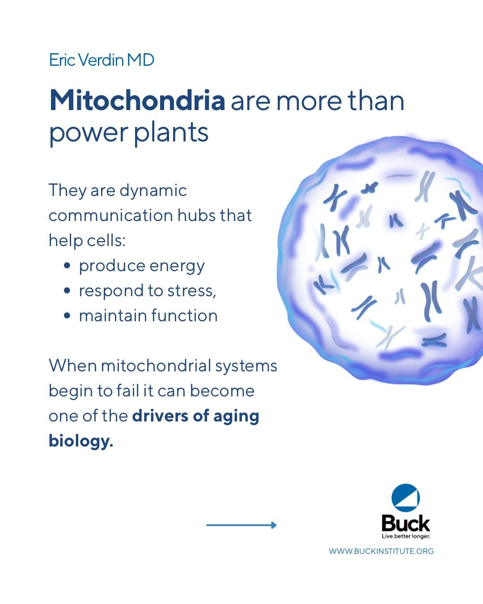
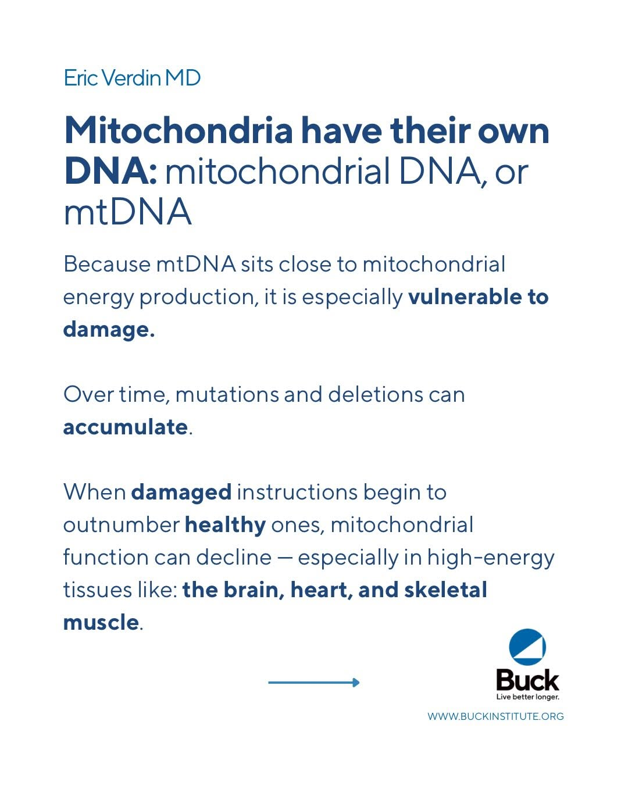
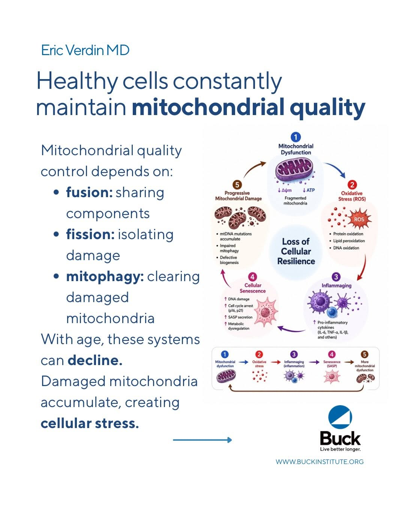
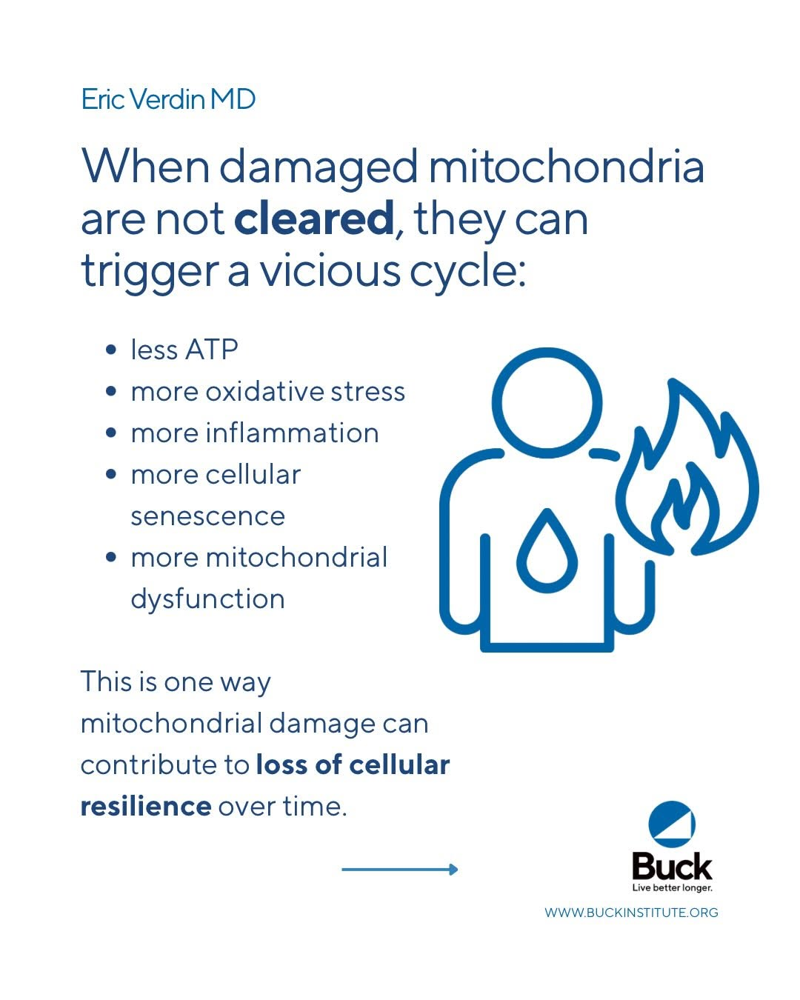

Mitochondria are not just power plants.
We were taught they make ATP and that is the end of the story. The biology is more interesting than that. Mitochondria sense stress, signal to the nucleus, regulate immune responses, and help decide whether a cell repairs itself or gives up.
They also carry their own DNA. mtDNA sits next to the machinery that generates reactive oxygen species, so it takes damage. Mutations and deletions accumulate over decades. When damaged copies start to outnumber healthy ones, function drops first in the tissues with the highest energy demand: brain, heart, skeletal muscle.
Healthy cells defend against this constantly. Fusion lets mitochondria share components and dilute damage. Fission isolates the parts that are failing. Mitophagy clears them out. This quality control machinery is the real story, and it declines with age.
When clearance slows, the cycle compounds. Less ATP. More oxidative stress. More inflammatory signaling. More senescent cells. More mitochondrial dysfunction. Each step feeds the next.
The honest limitation: we still lack reliable clinical biomarkers of mitochondrial health. NAD+ restoration, mitophagy enhancement, biogenesis, and metabolic fitness are all active areas of investigation, but without good measurement we cannot tell who benefits or how much.
Healthy aging depends less on how much energy a cell makes and more on whether it can still repair, recycle, and adapt.




